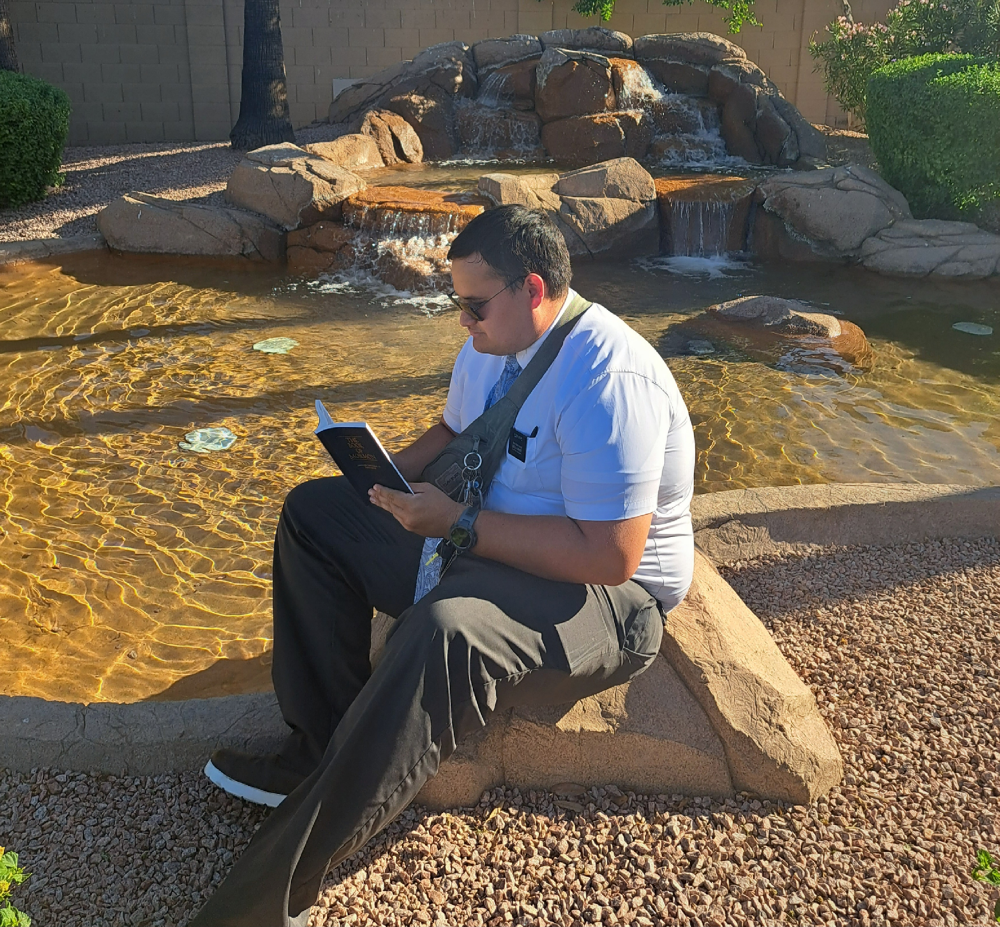
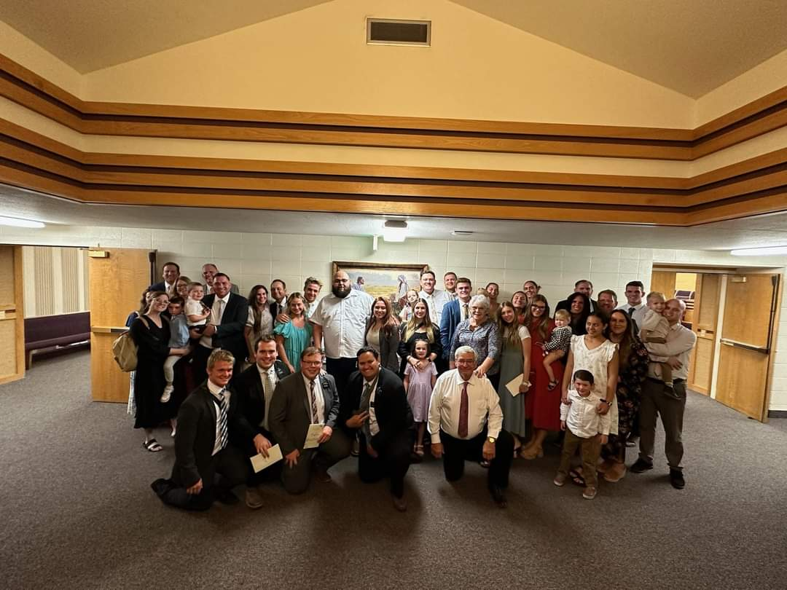
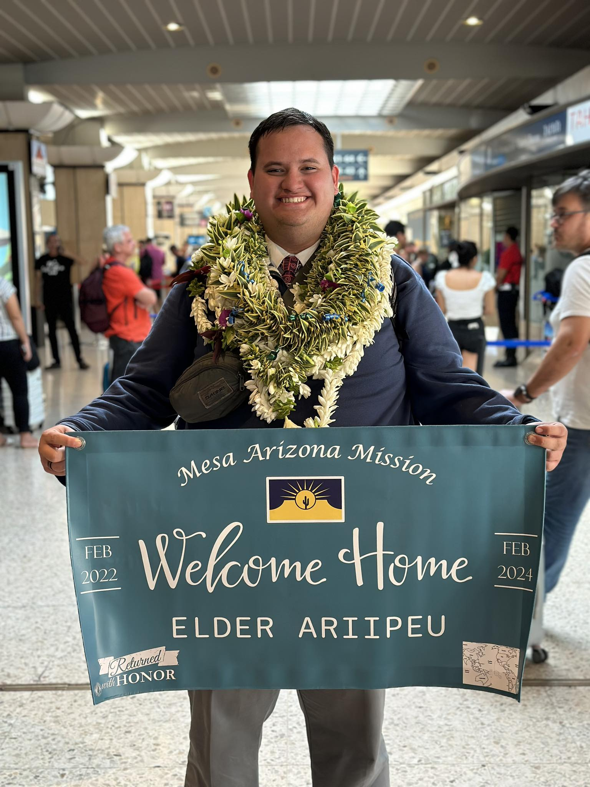

Growing in faith
My mission in Mesa, Arizona, was an incredible experience that changed the way I see the world and the gospel. I studied every morning during my mission and grew in faith and knowledge. That study brought me closer to my Savior. My mission also helped me realize the importance of everyone and the role each person plays in life.

Friends and experiences
I also enjoyed having fun with the friends I met during my mission and taking part in activities together. We had the chance to experience physical and spiritual miracles. I also discovered food from many places and learned to see beauty in everything.

Coming home
At the end of my mission, I felt sad and happy at the same time because I was leaving one family to return to another. Seeing my parents and sister again was a beautiful moment that I enjoyed before coming here. The timing was also special because my sister left for her mission a couple of months after I came home.

The Lord is good and has a plan for all of us.
“Lord, I give You everything; I have nothing more to give You.”.Motivation
No matter how harde it gets never give up. This was my father words for me.
Music of my misison
This music was made by an Elder in my mission
A moment from my mission
The sister run out of gas so we went to help them